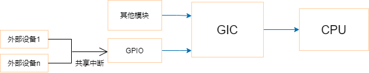

中断子系统¶
在设备树中声明中断¶
顶层GIC中断控制器¶
gic: interrupt-controller@fd400000 {
compatible = "arm,gic-v3";
reg = <0x0 0xfd400000 0 0x10000>, /* GICD */
<0x0 0xfd460000 0 0x80000>; /* GICR */
interrupts = <GIC_PPI 9 IRQ_TYPE_LEVEL_HIGH>;
interrupt-controller;
#interrupt-cells = <3>;
};
compatible：表明使用ARM GIC-V3中断控制器
reg：该中断控制器的基地址和大小
interrupts：表明该中断控制器的中断信息，这里使用GIC_PPI的第9号中断，高电平触发
interrupt-controller：表明这是一个中断控制器
#interrupt-cells：表明它的“子”中断控制器需要多少个cells来描述一个中断
子中断控制器¶

对于GPIO，可以将其视为中断控制器，但除了以上三个属性之外，还需要指定，使用上一级的哪一个中断控制器和哪一个中断：
-
interrupt-parent属性：指定上一级的中断控制器
-
interrupts属性：指定具体的中断号，第一个单元格定义了控制器内中断的索引，第二个单元格用于指定以下标志之一：
- 1：上升沿触发
- 2：下降沿触发
- 3：高电平触发
- 4：低电平触发
如果支持extended语法，则可以直接使用interrupts-extended属性来取代以上两个属性：
在代码中获得中断¶
设备树中的某些节点可以被转换为platform_device，可以使用platform_get_resource()函数获得中断资源。
对于I2C设备，I2C总线驱动在处理设备树的I2C节点时，会自动将其保存在struct i2c_client结构体中的irq成员里。SPI设备也是类似的原理。
如果你的设备节点既不能转换为platform_device，它也不是I2C设备、SPI设备，那么在驱动程序中可以自行调用of_irq_get()函数去解析设备树，得到中断号。
对于GPIO设备，可以使用gpiod_get_irq()函数获得中断号。
在驱动中使用中断¶
设备驱动程序可以通过request_irq()函数注册一个中断处理程序，并且激活给定的中断线：
int request_irq(unsigned int irq, irq_handler_t handler, unsigned long flags,
const char *name, void *dev)
irq：分配的中断号。
handler：函数指针，指向中断处理程序。
flags：中断标志位，比如IRQF_SHARED表示共享中断线。
name：中断处理程序的名字，会显示在/proc/irq和/proc/interrupts中。
dev：传递给中断处理程序的私有数据，用于区分共享中断线的不同处理程序。
request_irq()成功返回0，错误返回非0。最常见的错误是-EBUSY，表示给定的中断线已经被使用。
request_irq()可能会睡眠，因此不能在不允许阻塞的代码中调用该函数。
如果要使用线程化的中断处理程序，可以使用request_threaded_irq()函数。
要编写自己的中断处理程序，在以下函数中实现：
参数irq已经没有什么用了，参数dev用来向中断处理程序传递数据结构。
Linux上的中断处理程序无需要求可重入。因为中断处理程序运行时相应中断线上的中断是屏蔽的，也就是不会发生相同中断的嵌套。但不同中断的嵌套有可能发生。
中断共享
对于共享中断线的中断处理程序，需要在申请中断时指定IRQF_SHARED标志，同时将设备结构体指针作为dev_id传入。在中断到来时，内核遍历共享此中断的所有处理程序，直到某个函数返回IRQ_HANDLED。每个中断处理程序都必须判断是否为本设备的中断。
如果指定的中断线不是共享的，那么该函数删除处理程序的同时将禁用这条中断线。如果是共享的，那么仅删除所对应的中断处理程序，而这条中断线只有在删除了最后一个处理程序时才会被禁用。
卸载驱动程序时，需要注销相应的中断处理程序，并释放中断线：